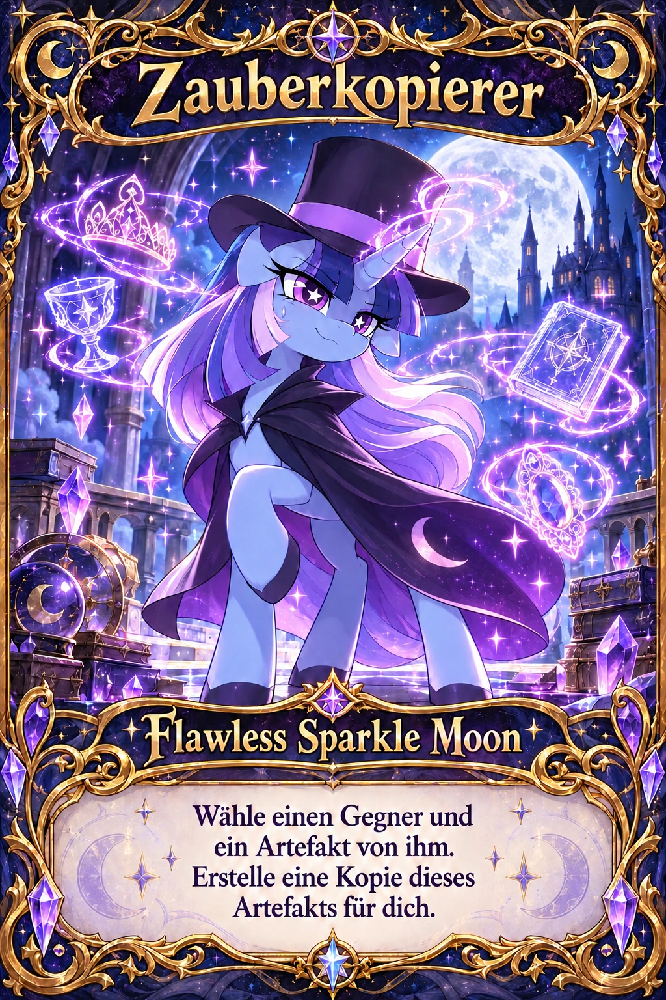
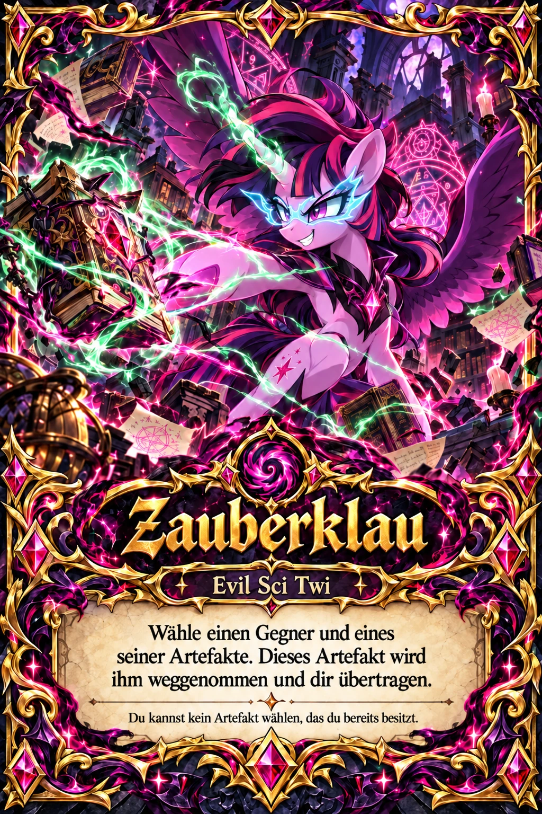
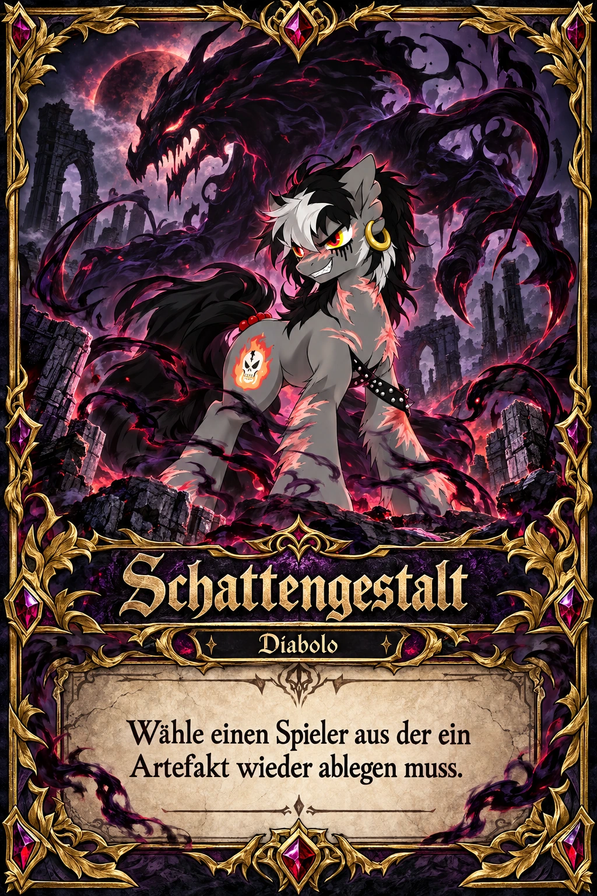

✨ Neue Special-Karten – Vorschau V17
Die Karten und Sounds stammen aus dem neuen Paket. Diese Seite ist eine lokale Vorschau und keine echte Mehrspielerpartie.

Flawless Sparkle Moon
Zauberkopierer: Erhalte eine Kopie eines gegnerischen Artefakts. Der Gegner behält seines.
Evil Sci Twi
Zauberklau: Stiehl ein gegnerisches Artefakt, das du noch nicht besitzt.
Diabolo – Schattengestalt
Neue Sounddatei für die bereits eingebaute Schattengestalt-Animation.Zaubereffekt-Vorschau